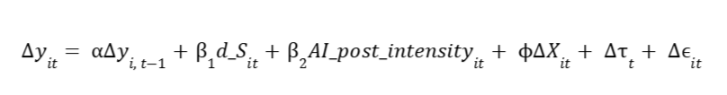

This graduation project examines one of the most debated questions in the labour market today: does AI innovation reduce or increase unemployment, and does the answer depend on how developed a country's economy already is? Using AI patent filings from 36 countries between 1991 and 2020 as a proxy for AI development, we built a dynamic panel model and an endogenous threshold model to test whether AI's labour market impact is uniform across countries or splits into distinct "regimes" based on income level. The project was submitted as a Bachelor of Science graduation requirement in Economics and Data Science at NTU.

Organisations and governments investing in AI need to know more than whether AI "creates or destroys jobs." They need to know for whom, and when. This project was framed to answer a more decision-useful version of the question: is the labour market effect of AI adoption immediate or delayed, and does a country's development level change which effect dominates? Answering this correctly matters for how a government designs reskilling programmes, how a company plans workforce strategy around AI rollout, and how an investor reads AI adoption as a macro signal.
We built a balanced panel of 36 countries from 1991 to 2020 using World Bank macroeconomic indicators and World Intellectual Property Organization AI patent data. AI adoption was split into two measures: an "onset" indicator marking the year a country first starts filing AI patents, and an ongoing "intensity" measure capturing how much AI innovation continues afterward. Before modelling, we ran a full diagnostic pipeline (cross sectional dependence tests, panel unit root tests, first differencing) to make sure the regression results were not spurious, a step that is often skipped in less rigorous analyses but is essential for credible conclusions.
Modelled unemployment as persistent over time (this year's unemployment strongly depends on last year's), while controlling for inflation, government spending, foreign investment, and population, and absorbing global shocks with year fixed effects.
Instead of guessing where "low income" ends and "high income" begins, we let the data find the actual breakpoint by testing every possible GDP per capita cutoff and choosing the one that best fit the model. This avoids injecting a subjective assumption into the analysis, a discipline that matters whenever a business analyst is asked to segment customers, markets, or regions.
Reran the entire analysis using an instrumental variable approach to check whether the original results could be explained away by reverse causality or statistical bias. The results held up, which is what gives the findings enough credibility to inform an actual policy or business recommendation.
Across all countries, AI adoption showed no statistically significant immediate effect on unemployment, meaning AI does not create an instant, uniform shock to labour markets.
Once we split countries by development level, a clear pattern emerged: AI intensity was linked to a meaningful drop in unemployment in lower income economies, but only a weak, delayed effect in higher income ones.
The labour market effects we found were concentrated within a 12 to 18 month window, suggesting AI diffuses into the economy far faster than older technologies like electricity or computers did.
This project is ultimately about matching the right workforce strategy to the right context. In lower income economies, AI appears to create new jobs fast enough to offset the ones it displaces. In advanced economies like Singapore, the more likely story is internal task reallocation, meaning existing employees shift into new roles rather than net new hiring happening. For a business analyst or strategy team, the implication is direct: if you are advising on AI adoption in a mature economy, plan for upskilling and internal mobility, not headcount growth. If you are advising in an emerging market, the priority shifts toward lowering the barriers to AI adoption to capture the job creation effect while it is strongest. This is the kind of segmented, evidence based recommendation that separates a data backed strategy from a one size fits all assumption.
Overall, this project shows that AI's effect on unemployment is not one size fits all. It depends heavily on how developed an economy already is, and it shows up faster than classic economic theory would predict. The findings support a segmented policy approach: emerging economies should focus on accelerating AI adoption to capture job creation, while advanced economies should prioritise upskilling to manage internal task reallocation. Beyond the specific result, the project demonstrates an end to end applied econometrics workflow, from raw data diagnostics through causal robustness checks, that mirrors how a business or policy analyst would need to defend a data driven recommendation to real stakeholders.